Question Suppose we are going to sample 100 individuals from a county (of size much larger than 100) and ask each sampled person whether they support policy Z or not. Let \(Y_i\) = 1 if person \(i\) in the sample supports the policy, and \(Y_i = 0\) otherwise.
Assume \(Y_1\), . . . , \(Y_100\) are, conditional on \(\theta\), i.i.d. binary random variables with expectation \(\theta\). Write down the joint distribution of Pr(\(Y_1\) = \(y_1\), . . . , \(Y_100\) = \(y_100\)|\(\theta\)) in a compact form. Also write down the form of Pr(\(\sum Y_i\) = y|\(\theta\)).
Sampling from a binomial model:
For the moment, suppose you believed that \(\theta\) \(\in\) {0.0, 0.1, . . . , 0.9, 1.0}. Given that the results of the survey were \(\sum^{100}_{i=1} Y_i\) = 57, compute Pr(\(\sum^{100}_{i=1} Y_i\) i = 57 | \(\theta\)) for each of these 11 values of \(\theta\) and plot these probabilities as a function of \(\theta\).
sum <- 57
count <- 100
theta <- seq(0, 0.9, by = 0.1)
lh <- sapply(theta,function(x)dbinom(sum,count,x))
df <- data.frame(theta = theta, probability = lh)
print(round(df, 3))## theta probability
## 1 0.0 0.000
## 2 0.1 0.000
## 3 0.2 0.000
## 4 0.3 0.000
## 5 0.4 0.000
## 6 0.5 0.030
## 7 0.6 0.067
## 8 0.7 0.002
## 9 0.8 0.000
## 10 0.9 0.000library(ggplot2)## Warning: package 'ggplot2' was built under R version 3.6.2p<-ggplot(data=df, aes(x=theta, y=lh)) +
geom_bar(stat="identity", fill="steelblue") +
scale_x_continuous(breaks = theta) +
theme_minimal()
p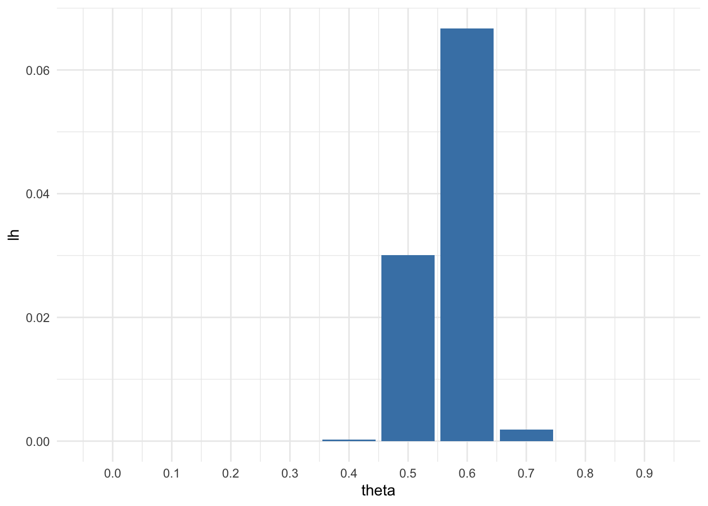
Now suppose you originally had no prior information to believe one of these θ-values over another, and so Pr(\(\theta\) = 0.0) = Pr(\(\theta\) = 0.1) = · · · = Pr(\(\theta\) = 0.9) = Pr(\(\theta\) = 1.0). Use Bayes’ rule to compute p(\(\theta\)| \(\sum_n^{i=1} Y_i\) =57) for each \(\theta\)-value. Make a plot of this posterior distribution as a function of \(\theta\). We have a prior p(\(\theta_i\)) = \(\frac{1}{11}\) for every \(\theta_i\), hence it got cancelled out. Bayes’ rule gives us:
#A uniform prior = 1/11
denom <- sum(lh)
pos <- sapply(theta, function(theta) dbinom(sum, count , theta) / denom)
df <- data.frame(theta = theta, posterior = pos)
print(round(df, 3))## theta posterior
## 1 0.0 0.000
## 2 0.1 0.000
## 3 0.2 0.000
## 4 0.3 0.000
## 5 0.4 0.002
## 6 0.5 0.304
## 7 0.6 0.675
## 8 0.7 0.019
## 9 0.8 0.000
## 10 0.9 0.000ggplot(df,aes(x = theta, y = posterior)) +
geom_bar(stat = 'identity', fill="steelblue") +
scale_x_continuous(breaks = theta) +
theme_minimal()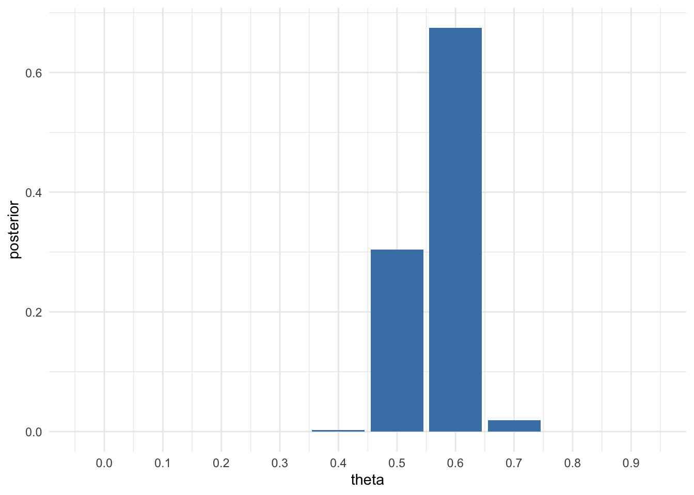
Now suppose you allow \(\theta\) to be any value in the interval [0, 1]. Using the uniform prior density for θ, so that p(\(\theta\)) = 1, plot the posterior density p(\(\theta\)) × Pr(\(\sum_{i=1}^n Y_i = 57\) | \(\theta\)) as a function of \(\theta\).
We have a prior distribution \(p(\theta)\) of beta(1,1)
and a sampling model: \[\begin{equation} p(y_1, . . . , y_n|\theta) = \theta^{\sum_{i=1}^n}(1 - \theta)^{n-\sum_{i=1}^n} \end{equation}\]
theta2 <- seq(from=0, to=1, by = 0.001)
lh2 <- sapply(theta2, function(theta2) dbinom(sum, count,theta2))
qplot(theta2, lh2, geom='line')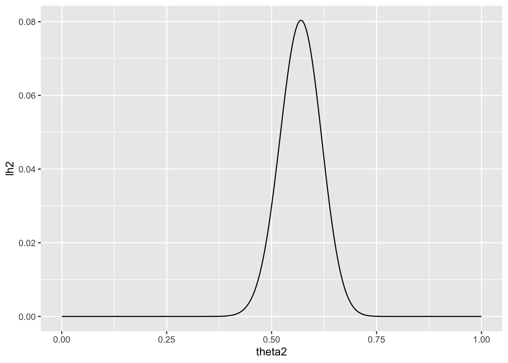
As discussed in this chapter, the posterior distribution of \(\theta\) is beta(1 + 57, 1 + 100 − 57). Plot the posterior density as a function of \(\theta\). Discuss the relationships among all of the plots you have made for this exercise.
qplot(theta2, dbeta(theta2, 1+57, 1+100-57), geom = 'line')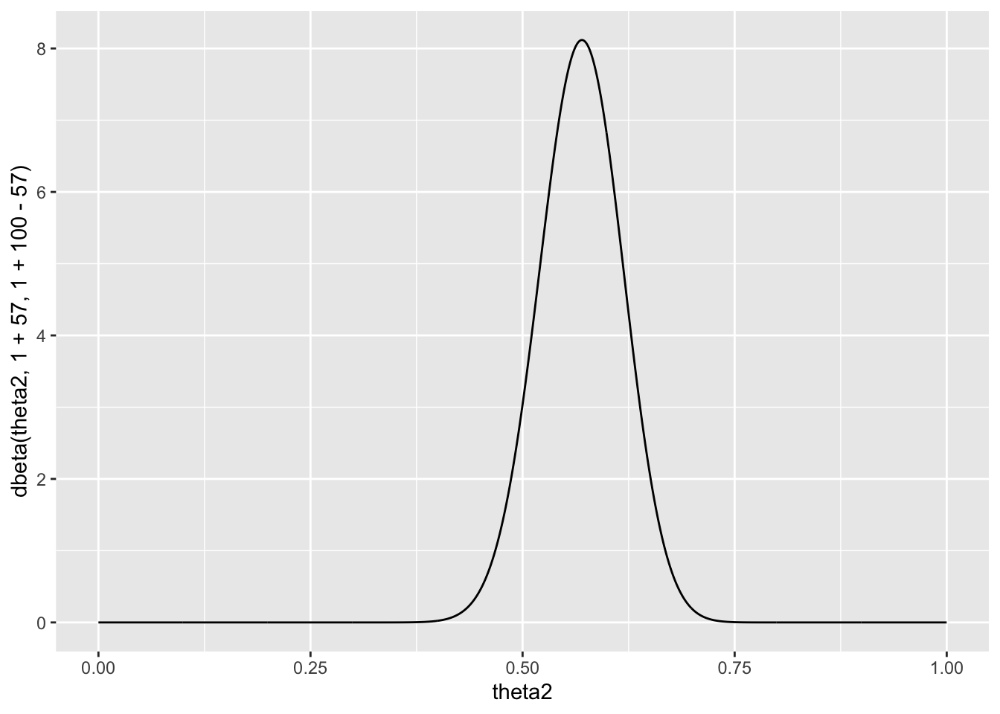
It is sometimes useful to express the parameters a and b in a beta distribution in terms of \(\theta_0\) = a/(a + b) and \(n_0\) = a + b, so that a = \(\theta_0 n_0\) and b = (1 − \(\theta_0\))\(n_0\). Reconsidering the sample survey data in Exercise 3.1, for each combination of \(\theta_0\) ∈ {0.1, 0.2, . . . , 0.9} and \(n_0\) ∈ {1, 2, 8, 16, 32} find the corresponding a, b values and compute Pr(\(\theta > 0.5| \sum Y_i = 57\)) using a beta(a, b) prior distribution for \(\theta\). Display the results with a contour plot, and discuss how the plot could be used to explain to someone whether or not they should believe that \(\theta\) > 0.5, based on the data that \(\sum_{i=1}^{100} Y_i = 57\))
# par(mar=c(3,3,1,1),mgp=c(1.75,.75,0))
par(mfrow=c(1,2))
g<-11
th0<-seq(0,1,,by =0.1)
n0<-c(1,2,4,6,8,12,16,20,24,28,32)
y<-57 ; n<-100
PP10<-PM<-PLQ<-PUQ<-matrix(0,g,g)
for(i in 1:g) {for(j in 1:g) {
# Corresponding a and b values:
a<-n0[i]*th0[j]
b<-n0[i]*(1-th0[j])
PM[i,j]<- (a+y)/(a+y+b+n-y)
pbeta
PP10[i,j]<- 1-pbeta(.5,a+y,b+n-y)
PLQ[i,j]<- qbeta(.05,a+y,b+n-y)
PUQ[i,j]<- qbeta(.95,a+y,b+n-y)
}}
contour(n0,th0,PM,xlab=expression(italic(n0)), ylab=expression(theta[0]),vfont = c("sans serif", "plain"))
title("E[θ|sum of Y = 57]", font = 4)
contour(n0,th0,PP10,xlab=expression(italic(n0)),levels=c(0.1,0.3,.5,.70,.90,.975) )
title("Pr(θ > 0.50|sum of Y = 57)", font = 4)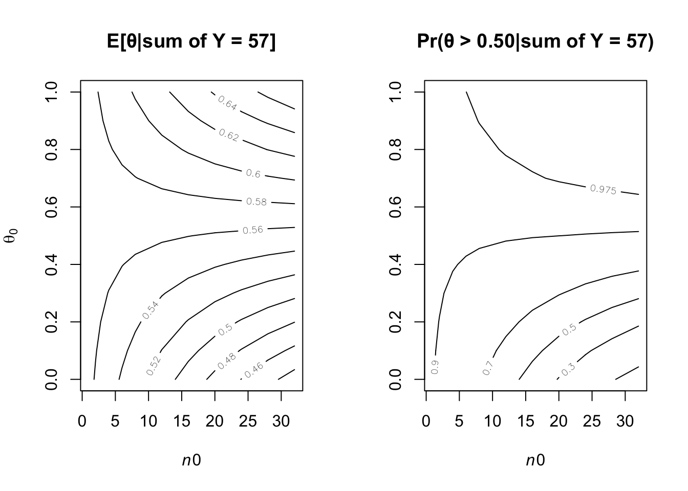
a<-1 ; b<-1
(a+y)/(b+n-y)## [1] 1.318182(a+y-1)/(a+y-1+b+n-y-1)## [1] 0.57print(round(1-pbeta(.50,a+y,b+n-y),3))## [1] 0.918The left-panel figure gives the posterior probabilities Pr(\(\theta\) > 0.5|\(\sum Y\) = 57). The plot indicates that people with weak prior beliefs (low values of \(n_0\)) or low prior expectations(\(\theta _0\)) are generally 91% or more believe that the \(\theta\) is greater 0.50.
#Corresponding a and b values
a<-n0*th0 ; b<-n0*(1-th0)
# Posterior Expectation
exp<- outer(a, b, FUN=function(a,b) (a+y)/(b+n-y) )
rownames(exp) <- a
colnames(exp) <- b
head(exp)## 1 1.8 3.2 4.2 4.8 6 6.4 6
## 0 1.295455 1.272321 1.233766 1.207627 1.192469 1.163265 1.153846 1.163265
## 0.2 1.300000 1.276786 1.238095 1.211864 1.196653 1.167347 1.157895 1.167347
## 0.8 1.313636 1.290179 1.251082 1.224576 1.209205 1.179592 1.170040 1.179592
## 1.8 1.336364 1.312500 1.272727 1.245763 1.230126 1.200000 1.190283 1.200000
## 3.2 1.368182 1.343750 1.303030 1.275424 1.259414 1.228571 1.218623 1.228571
## 6 1.431818 1.406250 1.363636 1.334746 1.317992 1.285714 1.275304 1.285714
## 4.8 2.8 0
## 0 1.192469 1.244541 1.325581
## 0.2 1.196653 1.248908 1.330233
## 0.8 1.209205 1.262009 1.344186
## 1.8 1.230126 1.283843 1.367442
## 3.2 1.259414 1.314410 1.400000
## 6 1.317992 1.375546 1.465116mode<- outer(a, b, FUN=function(a,b) (a+y-1)/(a+y-1+b+n-y-1))
rownames(exp) <- a
colnames(exp) <- b
head(mode)## [,1] [,2] [,3] [,4] [,5] [,6] [,7]
## [1,] 0.5656566 0.5611222 0.5533597 0.5479452 0.5447471 0.5384615 0.5363985
## [2,] 0.5665323 0.5620000 0.5542406 0.5488281 0.5456311 0.5393474 0.5372849
## [3,] 0.5691383 0.5646123 0.5568627 0.5514563 0.5482625 0.5419847 0.5399240
## [4,] 0.5734127 0.5688976 0.5611650 0.5557692 0.5525813 0.5463138 0.5442561
## [5,] 0.5792564 0.5747573 0.5670498 0.5616698 0.5584906 0.5522388 0.5501859
## [6,] 0.5904762 0.5860113 0.5783582 0.5730129 0.5698529 0.5636364 0.5615942
## [,8] [,9] [,10] [,11]
## [1,] 0.5384615 0.5447471 0.5555556 0.5714286
## [2,] 0.5393474 0.5456311 0.5564356 0.5723014
## [3,] 0.5419847 0.5482625 0.5590551 0.5748988
## [4,] 0.5463138 0.5525813 0.5633528 0.5791583
## [5,] 0.5522388 0.5584906 0.5692308 0.5849802
## [6,] 0.5636364 0.5698529 0.5805243 0.5961538yA = (12, 9, 12, 14, 13, 13, 15, 8, 15, 6);
yB = (11, 11, 10, 9, 9, 8, 7, 10, 6, 8, 8, 9, 7).Find the posterior distributions, means, variances and 95% quantile-based confidence intervals for \(\theta_A\) and \(theta_B\) , assuming a Poisson sampling distribution for each group and the following prior distribution: \[\begin{gather} \theta_A ∼ gamma(120,10), \theta_B ∼ gamma(12,1), p(\theta_A , \theta_B ) = p(\theta_A )×p(\theta_B ). \end{gather}\]
y_a <- c(12, 9, 12, 14, 13, 13, 15, 8, 15, 6)
y_b <- c(11, 11, 10, 9, 9, 8, 7, 10, 6, 8, 8, 9, 7)
Y_a <- sum(y_a)
n_a <- length(y_a)
Y_b <- sum(y_b)
n_b <- length(y_b)After obtain the data, posterior distribution: \[\begin{gather} \theta_A ∼ gamma(120+117,10+10), \theta_B ∼ gamma(12+113,1+13) \end{gather}\]
Means
exp_a <-(120+117)/(10+10)
print(exp_a)## [1] 11.85exp_b <-(12+113)/(1+13)
print(exp_b)## [1] 8.928571Variances
var_a <- (120+117)/(10+10)^2
print(var_a)## [1] 0.5925var_b <- (12+113)/(1+13)^2
print(var_b)## [1] 0.637755195% quantile-based confidence intervals
qgamma(c(0.025, 0.975), 120+117, 10+10)## [1] 10.38924 13.40545qgamma(c(0.025, 0.975), 12+113, 1+13)## [1] 7.432064 10.560308Compute and plot the posterior expectation of \(\theta_B\) under the prior distribution \(\theta_B\) ∼ gamma(\(12×n_0\), \(n_0\)) for each value of \(n_0\) ∈ {1, 2, . . . , 50}. Describe what sort of prior beliefs about \(\theta_B\) would be necessary in order for the posterior expectation of \(\theta_B\) to be close to that of \(\theta_A\) .
n_0 = 1:50
mean.pos = (12 * n_0 + sum(y_b)) / (n_0 + length(y_b))
qplot(n_0, mean.pos)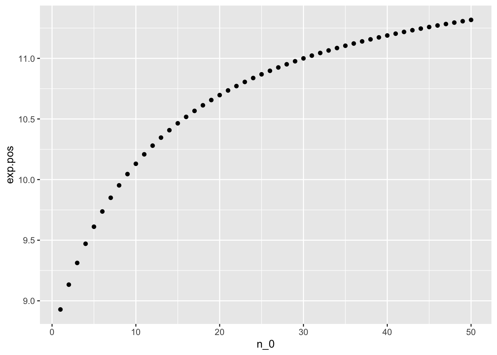 We can see from the graph that, in order for the posterior expectation of \(\theta_B\) to be close to that of \(\theta_A\), prior beliefs shoud be around 50
Should knowledge about population A tell us anything about population B? Discuss whether or not it makes sense to have p(\(\theta_B\), \(\theta_B\) ) = p(\(\theta_A\)) × p(\(\theta_B\)).
We have included “type B mice are related to type A mice.” into our prior beliefs about \(\theta_B\). Strong prior beliefs are needed for \(\theta_A\) to be close to that of \(\theta_A\), hence we should assume them independent.
Let p(y|φ) = c(φ)h(y) exp{φt(y)} be an exponential family model and let p1(φ), . . . pK (φ) be K different members of the conjugate class of prior densities given in Section 3.3. A mixture of conjugate priors is given by \(\tilde{p}(θ) = \sum^K_{k=1} w_k p_k(θ)\), where the \(w_k\) ’s are all greater than zero and \(\sum w_k\) = 1 (see also Diaconis and Ylvisaker (1985)).
Identify the general form of the posterior distribution of θ, based on n i.i.d. samples from p(y|θ) and the prior distribution given by \(\tilde{y}\).
\[\begin{align} p(\phi | y_1, \dots, y_n) &= \frac {p(\phi)p(\phi) p(y_1, \dots, y_n | \phi)}{p(y_1, \dots, y_n)}\\ &\propto p(\phi) p(y_1, \dots, y_n | \phi) \\ \end{align}\] From sec3.3: \[\begin{align} \tilde{p}(\theta) &= \sum^K_{k=1} w_k p_k(\theta)\\ &= \sum_{k = 1}^K ( w_k \kappa (n_{0k}, t_{0k}) c(\phi)^{n_{0k}} \exp((n_{0k} t_{0k} \phi)) ) \end{align}\] and \[\begin{align} p(y_1, \dots, y_n | \phi) &= \prod_{i = 1}^n h(y_i) c(\phi) \text{exp}(\phi t(y_i)) \end{align}\] Then: \[\begin{align} p(\phi | y_1, \dots, y_n) &\propto p(\phi) p(y_1, \dots, y_n | \phi) \\ &\propto \left[ \sum_{k = 1}^K \left( w_k \kappa (n_{0k}, t_{0k}) c(\phi)^{n_{0k}} \text{exp}(n_{0k} t_{0k} \phi) \right) \right] \times \left[ \prod_{i = 1}^n h(y_i) c(\phi) \text{exp}(\phi t(y_i)) \right] \\ &\propto \left[ \sum_{k = 1}^K \left( w_k \kappa (n_{0k}, t_{0k}) c(\phi)^{n_{0k}} \text{exp}(n_{0k} t_{0k} \phi) \right) \right] \times \left[ c(\phi)^n \text{exp}\left(\phi \sum_{i = 1}^n t(y_i)\right) \prod_{i = 1}^n h(y_i)\right] \\ &\propto \left[ \sum_{k = 1}^K \left( w_k \kappa (n_{0k}, t_{0k}) c(\phi)^{n_{0k}} \text{exp}(n_{0k} t_{0k} \phi) \right) \right] \times \left[ c(\phi)^n \text{exp}\left(\phi \sum_{i = 1}^n t(y_i)\right) \right] \times \prod_{i = 1}^n h(y_i) \\ &\propto \sum_{k = 1}^K \left[ w_k \kappa (n_{0k}, t_{0k}) c(\phi)^{n_{0, k} + n} \text{exp}\left[\phi \times \left(n_{0, k} t_{0, k}+ \sum_{i = 1}^n t(y_i) \right) \right] \right] \times \prod_{i = 1}^n h(y_i)\\ &\propto \sum_{k = 1}^K w_k p\left(\theta \; \middle| \; n_0 + n, \; n_0 t_0 + \sum_{i = 1}^{n} t(y_i)\right) \\ \end{align}\]
We can see the similarity between the posterior and prior distributions
Repeat a) but in the special case that p(y|θ) = dpois(y, θ) and \(p_1\), . . . , \(p_K\) are gamma densities.
Since prior is mixture of gamma densities and sampling model is Poisson distribution:
\[\begin{gather*} p(\theta) = \sum_{k = 1}^K w_k p_k (\theta | a_k, b_k) = \sum_{k = 1}^K {w_k \frac{b_k^{a_k}}{\Gamma(a_k)} \theta^{a_k - 1} e^{-b_k \theta}}\\ p(y_1, \dots, y_n | \theta) = \prod_{i = 1}^n \frac{1}{y_i !} \theta^{y_i} e^{-\theta} \end{gather*}\]
Similar to (a): \[\begin{align} p(\theta \mid y_1, \dots, y_n) &\propto p(\theta) p(y_1, \dots, y_n | \theta) \\ &\propto \sum_{k = 1}^K \left( w_k \frac{b_k^{a_k}}{\Gamma(a_k)} \theta^{a_k - 1} e^{-b_k \theta} \right) \times \prod_{i = 1}^n \frac{1}{y_i !} \theta^{y_i} e^{-\theta} \\ &\propto \sum_{k = 1}^K \left( w_k \frac{b_k^{a_k}}{\Gamma(a_k)} \theta^{a_k - 1} e^{-b_k \theta} \right) \times \theta^{\sum y_i} e^{-n\theta} \times \prod_{i = 1}^n \frac{1}{y_i !}\\ &\propto \sum_{k = 1}^K \left( w_k \frac{b_k^{a_k}}{\Gamma(a_k)} \theta^{a_k + \sum y_i - 1} e^{-(b_k + n)\theta} \right) \times \prod_{i = 1}^n \frac{1}{y_i !} \\ &\propto \sum_{k = 1}^K w_k p\left(\theta \; \mid \; a_k + \sum y_i, \; b_k + n \right) \\ \end{align}\]
Jeffreys (1961) suggested a default rule for generating a prior distribution of a parameter \(\theta\) in a sampling model p(y|\(\theta\)). Jeffreys’prior is given by \(p_J(\theta)\) \(\propto\) \(\sqrt{I(\theta)}\) , where \(I(\theta)\) = \(-\mathrm{E}(\frac{\partial^2 \log p(y \mid \theta)}{\partial \theta^2} )\) is the Fisher information
Likelihood: \[\begin{equation} p(y | \theta) = {n \choose y} \theta^y (1 - \theta)^{n - y} \end{equation}\] LogLikelihood: \[\begin{align} \log p(y \mid \theta) &= \log \left( {n \choose y} + y \log(\theta) + (n - y) \log(1 - \theta)\right) \\ \end{align}\]
Next is to differentiate with \(\theta\) twice: \[\begin{align} \frac{\partial}{\partial \theta} \log p(y | \theta) &= \frac{y}{\theta}- \frac{n - y}{1 - \theta} \\ \frac{\partial^2}{\partial \theta^2 } \log p(y | \theta) &= - \frac{y}{\theta^2} - \frac{n - y}{(1 - \theta)^2} \\ \end{align}\]
Take the expextation: \(\mathrm{E}(y) = n\theta\) \[\begin{align} -\mathrm{E}\left( -\frac{y}{\theta^2} - \frac{n - y}{(1 - \theta)^2} \right) &= \frac{n\theta}{\theta^2} + \frac{n - n\theta}{(1 - \theta)^2} \\ &= n \frac{1-\theta+\theta}{\theta(1-\theta)} \\ &= \frac{n}{\theta (1 - \theta)} \end{align}\]
So Jeffreys’ prior distribution is
\[\begin{align} p_J(\theta) &= \sqrt{n}\theta^{-1/2} (1 - \theta)^{-1/2} \\ \end{align}\]
Recall that: \[\begin{align} beta(a,b) =\frac{\Gamma(a+b)}{\Gamma(a)\Gamma(b)}\theta^{a-1}(1-\theta)^{b-1} \end{align}\]
\[\begin{align*} -\frac{1}{2} &= a-1 & -\frac{1}{2} &=b-1 \\ \end{align*}\]
We have: \[\begin{equation} p_J(\theta) = \frac{\Gamma(1)}{\Gamma(\frac{1}{2})\Gamma(\frac{1}{2})}\theta^{-\frac{1}{2}}(1-\theta)^{-\frac{1}{2}} \end{equation}\]
Reparameterize the binomial sampling model with \(\psi\) = \(\log (\theta/(1 − \theta))\), so that p(y|\(\psi\)) = {n y} \(e^{\psi y}(1+e^{\psi y})^{-n}\).Obtain Jeffreys’ prior distribution \(p_J (\psi)\) for this model.
Similar to (a): \[\begin{align} \log p(y \mid \psi) &= \log \left( {n \choose y} e^{\psi y} (1 + e^{\psi})^{-n} \right) \\ &= \log {n \choose y} + \psi y - n \log \left(1 + e^{\psi} \right) \\ \end{align}\]
Differentiate: \[\begin{align} \frac{\partial}{\partial \psi} \log p(y | \psi) &= y - \frac{n e^{\psi}}{e^{\psi} + 1} \\ \frac{\partial^2}{\partial \psi^2 } \log (y | \psi) &= - \frac{n e^{\psi}}{\left( e^{\psi} + 1 \right)^2} \end{align}\] Take Expectation: \[\begin{align} -\mathrm{E}\left( - \frac{n e^{\psi}}{\left( e^{\psi} + 1 \right)^2}\right) &= \frac{n e^{\psi}}{\left( e^{\psi} + 1 \right)^2} \\ \end{align}\]
\[\begin{equation} p_J(\psi) \propto \sqrt{\frac{n e^{\psi}}{\left( e^{\psi} + 1 \right)^2}} \end{equation}\]
Take the prior distribution from a) and apply the change of variables formula from Exercise 3.10 to obtain the induced prior density on \(\psi\). This density should be the same as the one derived in part b) of this exercise. This consistency under reparameterization is the defining characteristic of Jeffrey’s’ prior.
Note that Jeffreys’ prior is invariant under reparameterization:
From \(\psi = \log \frac{\theta}{1 - \theta}\) we get \(\theta = \frac{e^{\psi}}{1 + e^{\psi}}\) as a fucntion of \(\psi\): \(h(\psi)\).
Plug into the distribution in (a):
\[\begin{align} p(h(\psi)) &= \sqrt{\frac{n}{\frac{e^{\psi}}{1 + e^{\psi}} \left(1 - \frac{e^{\psi}}{1 + e^{\psi}}\right)}} \\ &= \sqrt{\frac{n}{h(\psi)(1 - h(\psi)}} \\ \end{align}\]
\[\begin{equation} \frac{dh(\psi)}{d\psi} = \frac{e^{\psi}}{{e^{\psi} + 1}^2} \end{equation}\]
Apply the change of variables formula: \[\begin{align} p_{\psi}(\psi) &\propto p(h(\psi)) \times \left| \frac{dh}{d\psi} \right| \\ &\propto \sqrt{\frac{n}{\frac{e^{\psi}}{1 + e^{\psi}} \left(1 - \frac{e^{\psi}}{1 + e^{\psi}}\right)}} \times \frac{e^{\psi}}{(e^{\psi} + 1)^2} \\ &\propto \sqrt{\frac{n(e^{\psi} + 1)^2}{e^{\psi}} } \times \frac{e^{\psi}}{(e^{\psi} + 1)^2} \\ &\propto \sqrt{\frac{n e^{\psi}}{\left( e^{\psi} + 1 \right)^2}}\\ \end{align}\]
Reconsider the tumor count data in Exercise 3.3:
For the prior distribution given in part a) of that exercise, obtain Pr(\(\theta_B < \theta_A|y_A, y_B\)) via Monte Carlo sampling.
theta.a = rgamma(5000, 237, 20)
theta.b = rgamma(5000, 125, 14)
mean(theta.b < theta.a)## [1] 0.994For a range of values of \(n_0\), obtain Pr(\(\theta_B < \theta_A|y_A, y_B\)) for \(\theta_A\) ∼ gamma(120, 10) and \(\theta_B\) ∼ gamma(12×\(n_0\), \(n_0\)). Describe how sensitive the conclusions about the event {\(\theta_B < \theta_A\)} are to the prior distributionon \(\theta_B\).
t<-NULL
for(n0 in 1:50) {
thetaB<-rgamma(10000, (12 * n0) + 113, n0 + 13)
thetaA <- rgamma(10000, 237, 20)
t<-c(t,mean(thetaB<thetaA))
}
plot(t,main="Sensitivity to n0",ylab="MC probability",xlab="n0",type="l",
col="blue")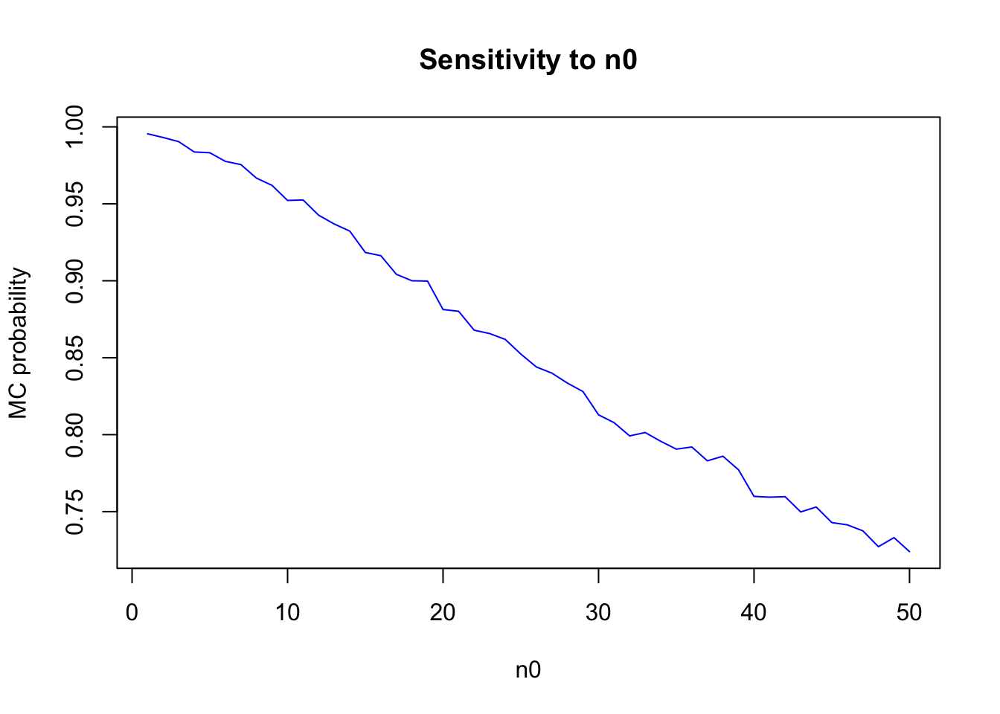 The posterior distribution is sensitive to the differences in prior opinion.
Repeat parts a) and b), replacing the event \({\theta_A < \theta_B}\) with the event{\(\tilde{Y_B} < \tilde{Y_A}\)}, where \(\tilde{Y_B}\) and \(\tilde{Y_A}\) are samples from the posterior predictive distribution.
y<-NULL
for(n0 in 1:50) {
thetaB<-rgamma(10000, (12 * n0) + 113, n0 + 13)
thetaA <- rgamma(10000, 237, 20)
y_a <- rpois(10000, thetaA)
y_b <- rpois(10000, thetaB)
y<-c(y,mean(y_b < y_a))
}
plot(t,main="Posterior Predictive
Distribution v.s n_0",ylab="MC probability",xlab="n0",type="l",
col="red")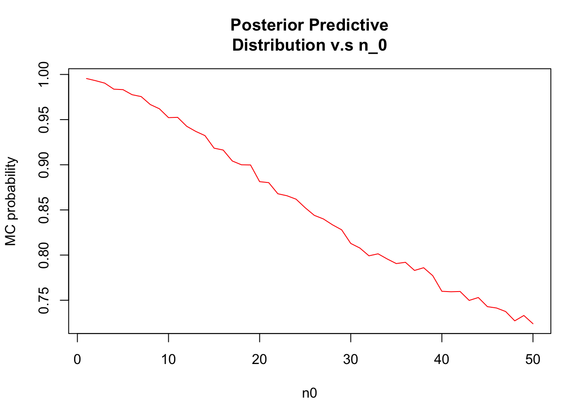 Distributions seem to be different from (b)
Let’s investigate the adequacy of the Poisson model for the tumor count data. Following the example in Section 4.4, generate posterior predictive datasets \(y^{(1)}_A \dots y^{(1000)}_A\). Each \(y^{(s)}_A\)is a sample of size \(n_A\) = 10 from the Poisson distribution with parameter \(\theta_A^{(s)}\), \(\theta_A^{(s)}\) is itself a sample from the posterior distribution \(p(\theta_A|y_A)\), and \(y_A\) isthe observed data.
Load the tutmor counts data
y.a = c(12, 9, 12, 14, 13, 13, 15, 8, 15, 6)
y.b = c(11, 11, 10, 9, 9, 8, 7, 10, 6, 8, 8, 9, 7)a<- 2 ; b<- 1
theta.a <- rgamma(1000, a + sum(y.a), b + length(y.a))
ta.mc<- NULL
for( s in 1:10000) {
y_s <- rpois(10, theta.a)
t <- mean(y_s) / sd(y_s)
ta.mc <- c(ta.mc,t)
}
hist(ta.mc, prob=T,xlab="t(s)_A",ylab="Counts",col = 'darkmagenta',breaks=15,main = "Monte Carlo approximation to the distribution")
ta.obs <- mean(y_a)/sd(y_a)
segments(ta.obs,0,ta.obs,0.4,col="black",lwd=3)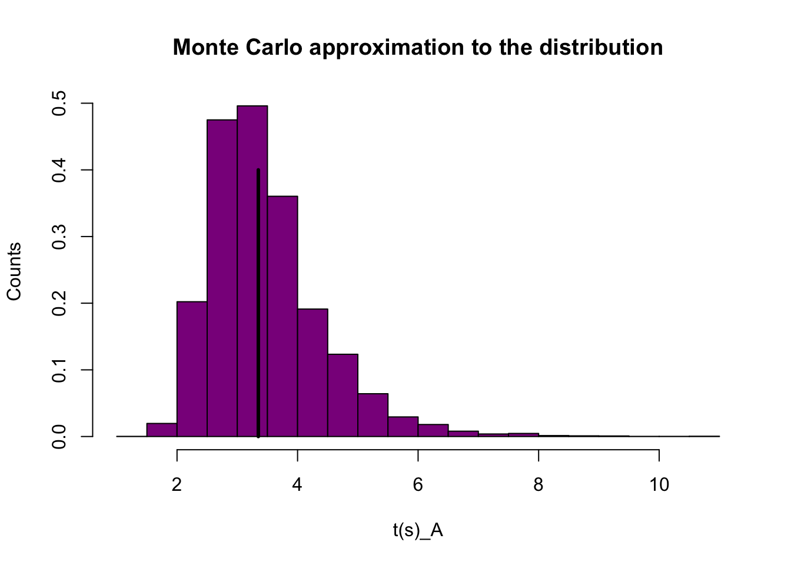 According to our Monte Carlo approximation to the ditribution of \(t^(s)\), with vertical line indicating the observed value \(t(y_obs)\) \(t(y_obs)\) seems to be in the peak of our 10,000 Monte Carlo datasets. Thus the Poisson model is not a bad fit.
Repeat the above goodness of fit evaluation for the data in population B.
a<- 2 ; b<- 1
theta.b <- rgamma(1000, a + sum(y.b), b + length(y.b))
tb.mc<- NULL
for( s in 1:10000) {
y_s <- rpois(10, theta.b)
tb <- mean(y_s) / sd(y_s)
tb.mc <- c(tb.mc,tb)
}
hist(tb.mc, prob=T,xlab="t(s)_B",ylab="Counts",col = 'darkmagenta',breaks =15,main = "Monte Carlo approximation to the distribution")
tb.obs <- mean(y.b)/sd(y.b)
segments(tb.obs,0,tb.obs,0.3,col="black",lwd=3)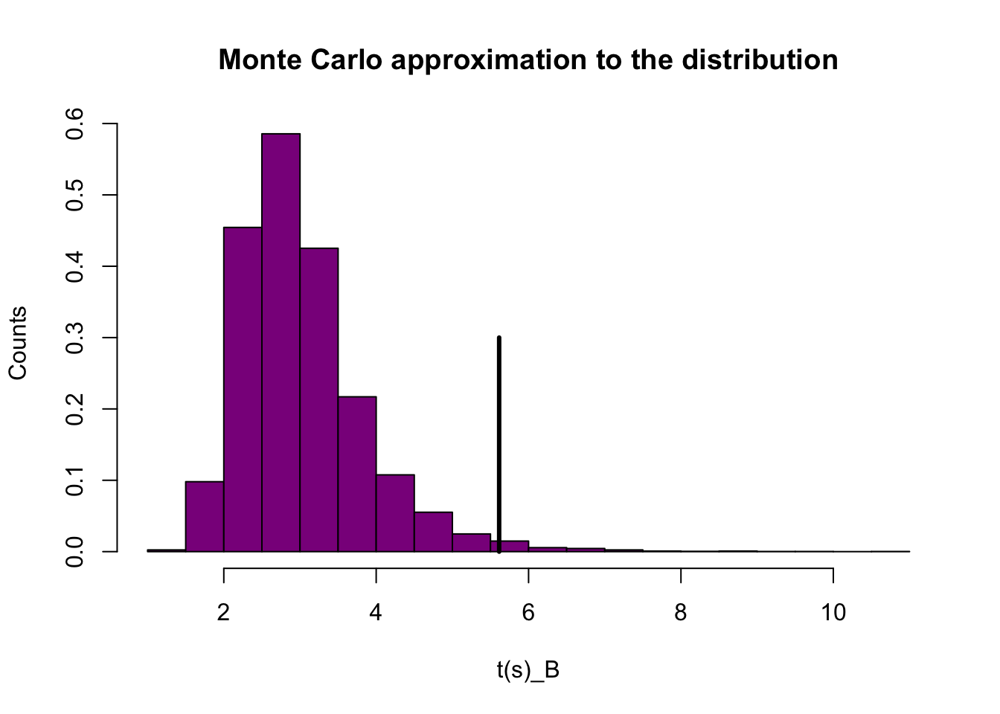 The vertical line is quite different from the distribution. This indicates that that our Poisson model is a bit flawed.
After a posterior analysis on data from a population of squash plants, it was determined that the total vegetable weight of a given plant could be modeled with the following distribution: \(p(y|\theta, /sigma^2) = .31dnorm(y, \theta, /sigma) + .46dnorm(2\theta_1, 2/sigma) + .23dnorm(y, 3\theta_1, 3/sigma)\)
where the posterior distributions of the parameters have been calculated as \(1/\sigma2\) ∼ gamma(10, 2.5), and \(\theta|\sigma^2\) ∼ normal(4.1, \(\sigma2/20\)).
sigma_sq.mc <- 1 / rgamma(10000, 10, 2.5)
theta.mc <- rnorm(10000, 4.1, sigma_sq.mc / 20)Form a 75% quantile-based confidence interval for a new value of Y.
sigma.mc <- sqrt(sigma_sq.mc)
y.mc <- 0.31 * rnorm(10000, theta.mc, sigma.mc) + 0.46 * rnorm(10000, 2 * theta.mc, 2 * sigma.mc) + 0.23 * rnorm(10000, 3 * theta.mc, 3 * sigma.mc)
print(quantile(y.mc, c(.125, .875)))## 12.5% 87.5%
## 7.162997 8.565352Form a 75% HPD region for a new Y as follows:
(i). Compute estimates of the posterior density of Y using the density command in R, and then normalize the density values so they sum to 1.
y.density <- density(y.mc)
plot(y.density,col = "red",main = "Posterior Density of Y")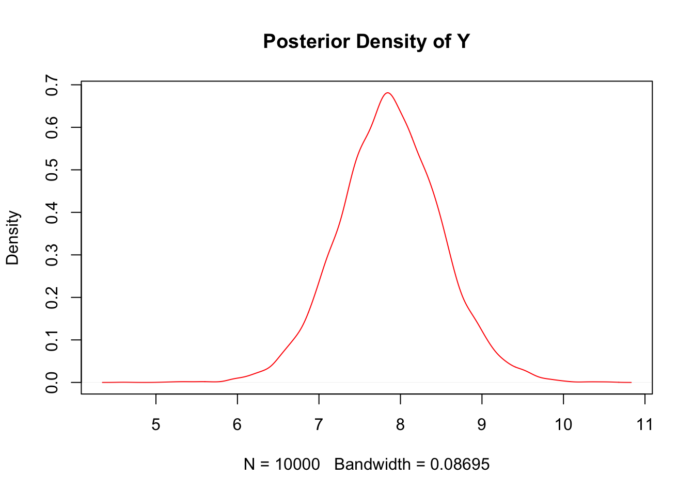
y_norm = y.density$y / sum(y.density$y)(ii). Sort these discrete probabilities in decreasing order.
y_sort <- y_norm[order(y_norm,decreasing = TRUE)](iii). Find the first probability value such that the cumulative sum of the sorted values exceeds 0.75. Your HPD region includes all values of y which have a discretized probability greater than this cutoff. Describe your HPD region, and compare it to your quantile-based region.
index <- min(which((cumsum(y_sort) >0.75)))
y_sort[index]## [1] 0.004131468data<-data.frame(x =y.density$x, density = y_norm)
data$hdp[data$density > y_sort[index]]="red"
data$hdp[data$density <= y_sort[index]]="blue"
plot(x= data$x, y=data$density,col=data$hdp,ylim=c(0,0.01),type = "p",cex=0.5,pch = 19)
legend(5, 0.006, legend=c("greater than cutoff", "less or equal than cutoff"),col=c("red", "blue"), lty=1:1, cex=0.8)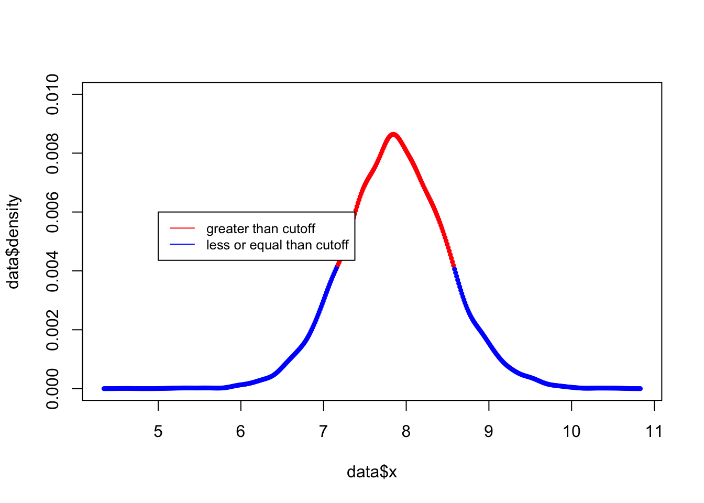